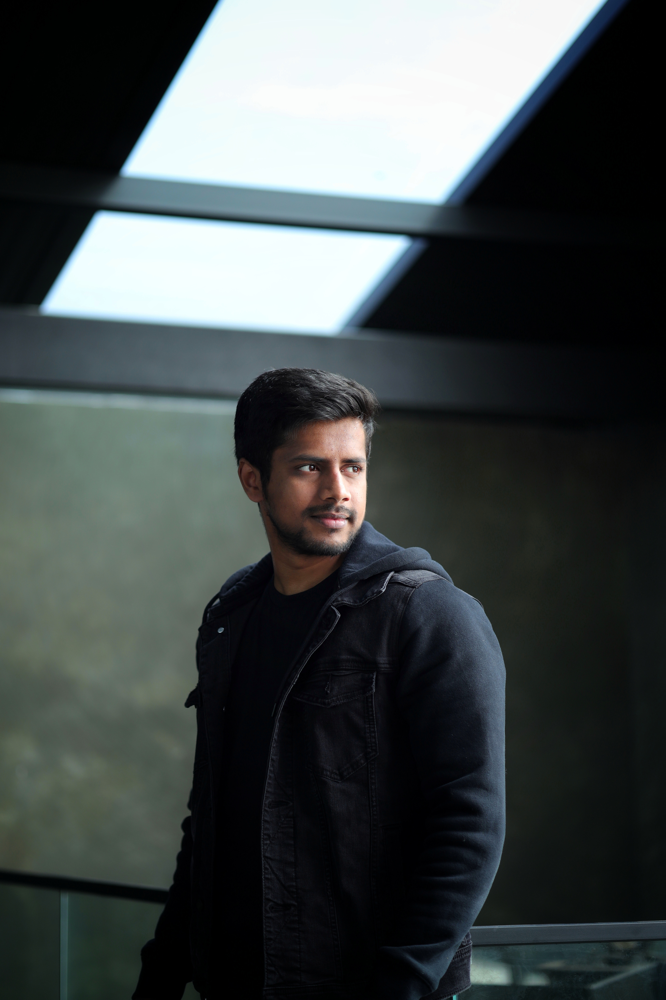
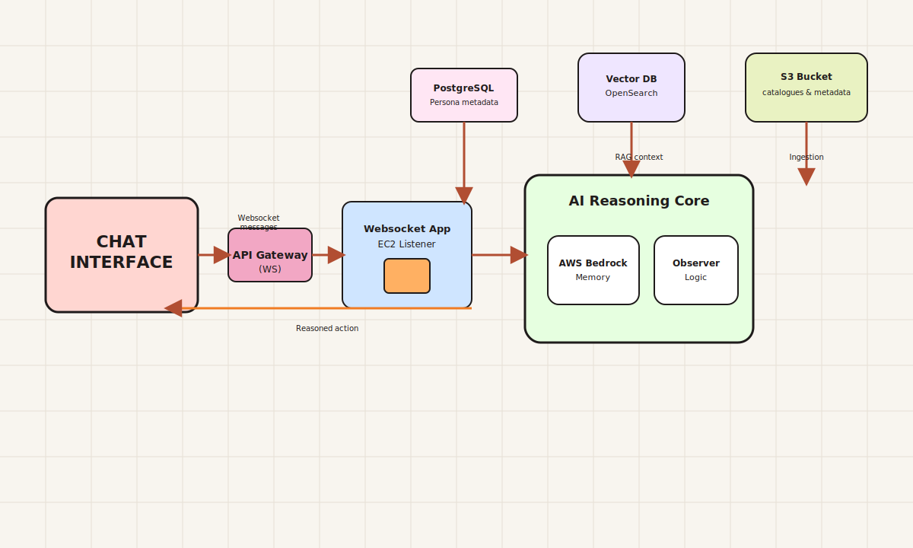

PREETHAM
PREETHAM
SHYLENDHRA
Data & AI Engineer
If it doesn’t need Human Creativity, I automate it so we can focus on work that actually matters.
About
Data & AI Engineer with 4+ years of experience delivering data automation and AI-powered solutions in fintech, insurance, and regulatory domains. Skilled in building scalable cloud architectures, integrating AI tools, and leading cross-functional teams.
AI and Automation
Multi-Persona Conversational AI Platform – AI Observer Group Chats
Agentic Data-to-Graph UI – Real-Time Postgres-to-Lineage Mapping

Agentic Pro Scraper – Automated Insurer Portal Data Extraction

Agentic Semantic Mapper – High-Precision Trade Term Matching

Intelligent Business Rule Automation – Code & Testcase Orchestration

AI-Powered RAG Interface – A Self-Service Platform for Q&A

Autonomous Email Handling – Gemini-Optimized Support Workflows
Intelligent Browser Automation – Dynamic Web Navigation

Cloud-Orchestrated AI Data Pipelines – Vertex AI & GCP

Automated Workflow for Claude-Powered Compliance Reporting

Gas Turbine Fault Diagnosis – 24-Hour Predictive Alert System

Orchestrated Invoice Generation – From Image to PDF in Minutes
AI-Driven Telecom Churn Prediction – BigQuery ML at Scale
Machine Learning for Term Deposit Subscriptions – Vertex AutoML
Skills
Vertex AI
Gen AI
LangChain
LangGraph
CrewAI
n8n
Zapier
LLM
AI Agents
Python
SQL
BigQuery
Streamlit
Browser Automation
End-to-End Process Automation
Rapid Prototyping & Iterative Delivery
Data Structures
Problem Solving
Research and Experimentation
Data Transformation and Regulatory Solutions
Automated Data Integration Solutions (Solidatus)

Strengthened Regulatory Compliance

Transformed Global Markets Architecture

Engineered the Custom Connector

Enhanced Regulatory Design

Unified Data Access Layer

Insurer Site Automation and Logic Engineering
Skills
Fraxses
Solidatus
Google Cloud Platform (GCP)
WPS Analytics
Docker
PostgreSQL
Microsoft Power BI
Lucidchart
Visio
SmartDraw
Microsoft Excel
Microsoft Access DB
Data Lineage
Data Visualization
Data Analytics
Cross-System Data Integration
End-to-End Solution Design
Scalable System Development
Mentorship, Process Enablement, and Client Interaction
Mentorship and Scalable Solution Leadership
Process Documentation and Knowledge Sharing
Hands-on Technical Training and Enablement
Stakeholder & Client Collaboration
Skills
Mentoring & Leadership
Cross-Functional Team Leadership
Vendor Evaluation & Cost Estimation
Stakeholder Communication & Alignment
Agile Delivery (Scrum, Kanban)
Team Collaboration
End-to-End Solution Design